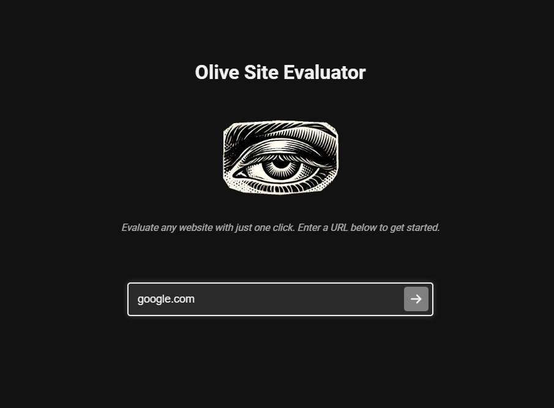

Olive AI - Website Evaluator
Olive AI is an advanced AI-powered tool designed for comprehensive website analysis and optimization, including chatbot functionality. This project showcases my expertise in AI and machine learning, particularly in natural language processing and web analysis.
Key Features:
- Automated website content analysis
- SEO optimization recommendations
- User experience evaluation
- Performance metrics assessment
- Chatbot functionality
- Recommendations and competitor analysis
Technologies Used:
- Python
- Natural Language Processing Libraries
- ChatGPT API
- Web Scraping Tools
Through the development of Olive AI, I've demonstrated my ability to create practical AI solutions that address real-world business needs in the digital space.
Discuss This Project